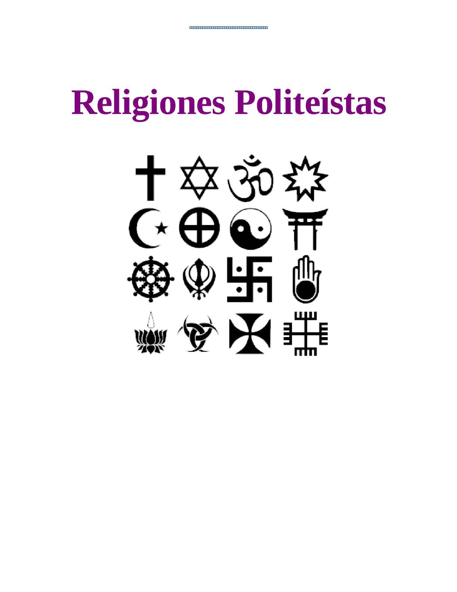

| Religiones Politeistas |
| Inicio | Religiones Monoteistas | Religiones Politeistas | Religiones Panteistas | No Teistas | Cristianismo | Islam | Hinduismo | Religion China | Budismo |
El Politeísmo
El politeísmo es una concepción religiosa o filosófica basado en la existencia de varios seres divinos o dioses. En la mayoría de las religiones que aceptan el politeísmo, los diferentes dioses son representaciones de fuerzas de la naturaleza o principios ancestrales, y pueden verse como autónomas o como aspectos o emanaciones de una deidad creadora o principio absoluto trascendental ( teologías monistas), que se manifiesta de manera inmanente en la naturaleza ( teologías panteístas y panenteístas)1. Muchas deidades politeístas, a excepción de las deidades egipcias2 o hindúes, son concebidas en un plano corpóreo más que etéreo.
El politeísmo es un tipo de teísmo. Dentro del teísmo, contrasta con el monoteísmo, la creencia en un Dios singular, en la mayoría de los casos trascendente. Los politeístas no siempre adoran a todos los dioses por igual, ya que pueden ser henoteístas, que se especializan en la adoración de una deidad en particular. Otros politeístas pueden ser katenoteístas, adorando a diferentes deidades en diferentes momentos.
A decir de David Hume, el politeísmo «fue la primera religión de los seres humanos»3. En verdad fue una forma típica de religión durante la Edad del Bronce y la Edad del Hierro hasta la Era Axial4 y el desarrollo de las religiones abrahámicas, la última de las cuales propugnaba el monoteísmo. Está bien documentado en las religiones históricas de la antigüedad clásica, especialmente la antigua religión griega y la antigua religión romana, y después de la decadencia del politeísmo grecorromano en religiones tribales como el paganismo germánico, eslavo y báltico.
Otros ejemplos históricos son las antiguas religiones egipcia, griega, romana, celta o nórdica, en la zona europea y norteafricana, como tampoco hay que olvidar las religiones amerindias como inca, maya o Religión mexica, por mencionar algunas precolombinas.
Pero no debe considerarse tanto una creencia del pasado sino de total presente y actualidad: las religiones politeístas más importantes existentes hoy en día son la religión tradicional china, el hinduismo, el sintoísmo japonés, la santería y varias religiones neopaganas.
La palabra politeísmo, del griego [poli] "muchos " y [theos] "Dios", es decir «muchos dioses ». Fue el escritor judaíco Filón de Alejandría quién utilizó el término por primera vez argumentando con los griegos. Tras la expansión del cristianismo entorno al Mediterráneo y por parte de Europa, se pasó a utilizar más la palabra pagano, gentil o la más peyorativa de idólatra para referirse a los no cristianos. Sería Juan Bodino en el siglo XVI 5 quien recuperaría el término.
El politeísmo es un tipo de teísmo. Dentro del teísmo, contrasta con el monoteísmo, cuya creencia en un Dios singular, en la mayoría de los casos trascendente. Los politeístas no siempre adoran a todos los dioses de igual modo, ya que pueden ser henoteístas, los cuales se especializan en la adoración de una deidad particular. Otros politeístas pueden ser katenoteistas, los cuales adoran a diferentes deidades en diferentes momentos.
El sistema engloba la personificación de elementos naturales, sentimientos y actividades humanas, normalmente organizados en una jerarquía o panteón. No se trata de diferente nomenclaturas para una sola deidad, sino de diversos dioses con características individuales claramente identificables. En el politeísmo cada deidad puede ser honrada e invocada de manera individual, dependiendo de los aspectos que le definen.
En las sociedades politeístas no suele existir una teología propiamente dicha, aunque suele coexistir con sistemas filosóficos y éticos bastante complejos. Cada fuerza sobrenatural o acontecimiento trascendental (como el rayo, la muerte o el embarazo) atiende a unos mecanismos establecidos, que conforman un complejo orden cósmico muy jerarquizado, descrito mediante mitos, leyendas y obras sagradas. En el politeísmo, debido a un entramado muy consolidado de transmisión, oral o escrita, el conocimiento es acumulativo, es decir, es ampliado por la especulación de los individuos dedicados a ello ( chamanes, brujos, sacerdotes, poetas), o bien por contacto intercultural.
Se suele señalar que el politeísmo corresponde, a menudo, a sociedades igualmente jerarquizadas, con una fuerte estratificación en clases sociales. Ejemplos habituales se darían en el Antiguo Egipto, Mesopotamia, en la cultura clásica griega y romana o en el hinduismo. Algunas creencias politeístas sitúan además la preeminencia de un dios sobre el resto del panteón (culto conocido como henoteísmo), lo que hizo creer a los antropólogos que este sería el paso natural hacia el monoteísmo.
El politeísmo está considerado por algunos antropólogos como el paso siguiente al animismo, una forma más avanzada de religiosidad (propia de un cierto nivel de civilización), en la que las fuerzas de la naturaleza son discriminadas, separadas y seleccionadas, y, finalmente, representadas por una serie de dioses antropomórficos.
Dentro de la cultura occidental es también posible encontrar desde finales del siglo XX formas actuales de politeísmo. El neopaganismo en sus diferentes variantes, como la Wicca, el Ásatrú, el neodruidismo, la Streghería, etc. reivindica el antiguo culto pagano y busca revivir el politeísmo occidental precristiano.
En las Islas Canarias (España), los aborígenes canarios profesaban una mitología politeísta (véase Mitología guanche).
